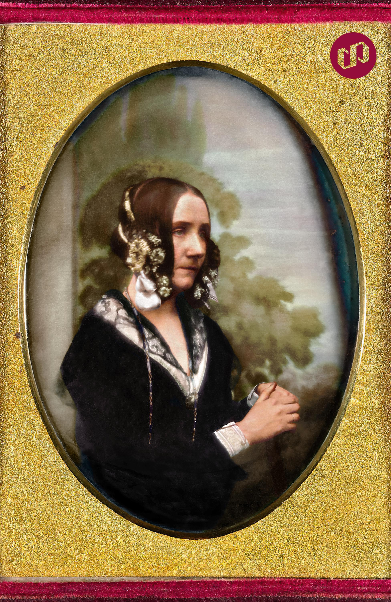

.jpg)
Infância Ada Lovelace nasceu Augusta Ada Byron em 10 de dezembro de 1815, em Londres, na Inglaterra. Filha do poeta George Gordon Byron, 6º Barão Byron, e de Anne Isabella "Annabella" Milbanke, Baronesa Byron.[12] George Byron esperava ser pai de um menino e ficou desapontado quando sua esposa deu à luz uma menina. Augusta recebeu esse nome por causa da meia-irmã de Byron, Augusta Leigh, e foi chamada de "Ada" pelo próprio George. Em 16 de Janeiro de 1816, Annabella, a pedido de George, se mudou para a casa de seus pais em Kirkby Mallory levando Ada com ela, que na época tinha apenas um mês de idade.[15] Embora a lei Inglesa desse ao pai a custódia total de seus filhos em caso de separação, Byron não fez nenhuma tentativa de reivindicar seus direitos, mas pediu para que sua irmã o mantivesse informado sobre o bem-estar de Ada. Em 21 de abril, Byron assinou a escritura de separação, com muita relutância, e deixou a Inglaterra para sempre alguns dias depois. Além de não aceitar bem a separação amarga, Annabella fez acusações sobre o comportamento imoral de Byron, durante toda sua vida. Este conjunto de eventos deixaram Ada famosa na sociedade vitoriana. Byron não tinha um relacionamento com sua filha e nunca mais a viu. Ele morreu em 1824, quando ela tinha oito anos. Sua mãe era a única figura parental significativa em sua vida.[19] Ada não foi autorizada a ver qualquer retrato de seu pai até seu vigésimo aniversário. Sua mãe se tornou Baronesa Wentworth em 1856.
Ada tornou-se amiga próxima de sua tutora Mary Somerville, que a apresentou para Charles Babbage em 1833. Ela respeitava e adorava Mary, as duas trocaram cartas por muitos anos. Dentre outros conhecidos de Ada estavam os cientistas Andrew Crosse, Sir David Brewster, Charles Wheatstone, Michael Faraday e o autor Charles Dickens. Aos dezessete anos foi apresentada à Corte e ficou conhecida por sua mente brilhante. Em 1834 Ada já frequentava a Corte com frequência e passou a participar de vários de seus eventos. Dançava com frequência e encantava as pessoas com seu charme e era vista como uma moça delicada; já um amigo de seu pai, John Hobhouse, a descrevia como “uma jovem mulher volumosa de pele áspera, mas com traços semelhantes ao de um amigo, especialmente os lábios”. Esta descrição foi seguida de um encontro em 24 de fevereiro de 1834, onde Ada deixou claro que não gostava de John, provavelmente devido a sua mãe, Lady Byron, que a influenciava a não gostar dos amigos de seu pai. Mesmo após esta má impressão, os dois viraram amigos mais tarde.
Como a primeira programadora mulher, Ada ocupa um espaço significativo como um ícone entre as figuras históricas na ciência da computação. Ada morreu com 36 anos de idade de câncer no útero e foi enterrada, a seu próprio pedido, ao lado de seu pai Byron que ela nunca conheceu.